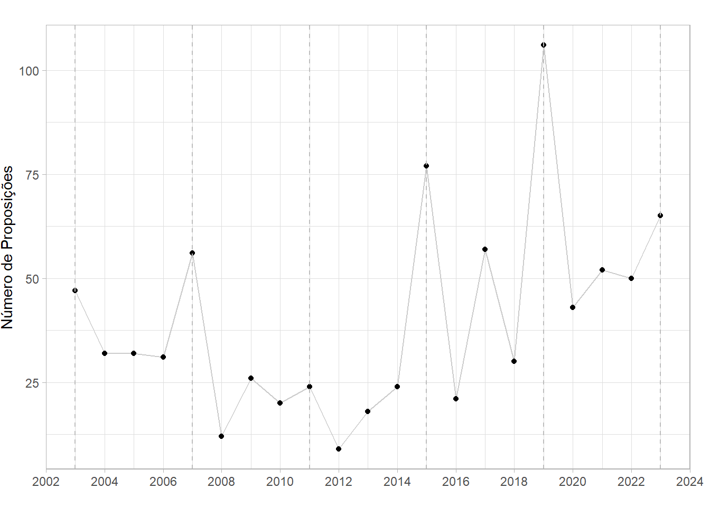

# Puxando banco
propTema <- read.csv("propTema.csv", sep=";")
# Planilha com palavras-chave
palavras_chave <- read.csv("keywords.csv", sep=";")
palavras_chave_vetor <- as.vector(palavras_chave$keywords)
expressao_palavras_chave <- paste(palavras_chave_vetor, collapse = "|")
expressao_palavras_chave <- paste0("\\b(", expressao_palavras_chave, ")\\b")
# Pesquisando banco por palavras-chave
propTema_filtrado <- propTema %>%
filter(str_detect(keywords, expressao_palavras_chave))Dados de replicação: As políticas de controle de armas de fogo e munições no Brasil e a baixa influência do Legislativo após o Estatuto do Desarmamento
As políticas de controle de armas de fogo e munições no Brasil e a baixa influência do Legislativo após o Estatuto do Desarmamento
Texto de Discussão Doxa - IESP/UERJ
Matteo de Barros Manes
Replicação: Banco de Dados
Puxando o banco de dados com proposições e divisões temáticas, a lista de palavras-chave. Depois, filtrando as proposições apenas com as que incluem aqueles termos.
Esse banco de dados inclui a separação por temáticas. Aqui, não é necessário excluir nenhuma dessas temáticas, já que estamos selecionando por palavras-chave. Um problema disso é que as proposições que se encaixam em mais de um tema estão duplicadas. É necessário excluir as observações extras:
# Removendo duplicados
propTema_filtrado_unico <- propTema_filtrado %>%
distinct(uriProposicao, .keep_all = TRUE)A partir disso, agora podemos selecionar apenas as proposições que são de nosso interesse:
# Selecionando os tipos de proposição
#Se quiser manter PDL e PLV: propTema_filtrado_unico <- subset(propTema_filtrado_unico, siglaTipo %in% c("PL", "PLP", "PDL", "PEC", "PRC", "MPV", "PLV"))
propTema_filtrado_unico <- subset(propTema_filtrado_unico, siglaTipo %in% c("PL", "PLP", "PEC", "PRC", "MPV"))Gráfico 1: Número de proposições sobre armas de fogo e munições por ano
Para o primeiro gráfico, queremos uma visualização simples de quantas proposições foram apresentadas por ano. Para facilidade de leitura, vamos criar um separador para cada legislatura.
# Cria um resumo contando o número de proposições por ano
proposicoes_por_ano <- propTema_filtrado_unico %>%
filter(ano > 0) %>% # Remove linhas onde ano é NA
group_by(ano) %>%
summarise(numero_de_proposicoes = n())
# Início das legislaturas
inicio_legislaturas <- c(2003, 2007, 2011, 2015, 2019, 2023)
#offset <- 0.2
# Crie o gráfico de linhas
ggplot(proposicoes_por_ano, aes(x = ano, y = numero_de_proposicoes)) +
geom_line(color = "#cccccc") + # Usa uma linha para conectar os pontos
geom_point() + # Adiciona pontos para cada ano
geom_vline(xintercept = inicio_legislaturas, linetype = "dashed", color = "gray") + # Adiciona linhas verticais
theme_light() +
labs(title = "",
x = "",
y = "Número de Proposições") +
scale_x_continuous(breaks = scales::pretty_breaks(n = 11)) + # Ajusta os intervalos do eixo X para melhor visualização, se necessário
theme(plot.margin = unit(c(0, 0.5, 0, 0), "cm"))
#theme(panel.grid.major = element_blank(), panel.grid.minor = element_blank()) # remove a grade para um visual mais limpo
# Salvar o gráfico
ggsave("g1_proposicoes-por-ano-totais.png", width = 6, height = 3, dpi = 300)Tabela 1: Vendo tramitação das proposições
Agora, para ver a distribuição das proposições quanto ao seu status de tramitação, vamos agregar os diferentes status entre: “Arquivado”, “Transformado em Norma Jurídica”, “Retirada” e “Em tramitação”. Depois, contamos cada proposição e calculamos a porcentagem do total, e pedimos para visualizar os dados.
# Agregando os Status
propTema_filtrado_unico <- propTema_filtrado_unico %>%
mutate(categoria_situacao = case_when(
ultimoStatus_descricaoSituacao %in% c("Arquivada", "Vetado totalmente") ~ "Arquivada",
ultimoStatus_descricaoSituacao == "Transformado em Norma Jurídica" ~ "Transformado em Norma Jurídica",
ultimoStatus_descricaoSituacao %in% c("Devolvida ao Autor", "Retirado pelo Autor") ~ "Retirada",
TRUE ~ "Em tramitação"
))
# Contar o número de proposições por categoria_situacao
distribuicao_situacao <- propTema_filtrado_unico %>%
group_by(categoria_situacao) %>%
summarise(numero_de_proposicoes = n())
# Em porcentagem
# Calcular o total de proposições
total_proposicoes <- sum(distribuicao_situacao$numero_de_proposicoes)
# Adicionar uma coluna de porcentagem
distribuicao_situacao <- distribuicao_situacao %>%
mutate(porcentagem = numero_de_proposicoes / total_proposicoes * 100)
# Arredondar as porcentagens para duas casas decimais
distribuicao_situacao <- distribuicao_situacao %>%
mutate(porcentagem = round(porcentagem, 2))
# Mostrar tabela
data.table(distribuicao_situacao) categoria_situacao numero_de_proposicoes porcentagem
<char> <int> <num>
1: Arquivada 271 32.57
2: Em tramitação 502 60.34
3: Retirada 38 4.57
4: Transformado em Norma Jurídica 21 2.52Proposições apresentadas entre executivo x legislativo, por ano e taxa de sucesso
Agora vamos olhar para a distribuição dividida entre Executivo e Legislativo. Note que outros autores serão deletados. Com os dados do nosso banco, isso significa que uma única proposição apresentada pelo Ministério Público da União não será considerado.
Aqui, vemos quais são todos os tipos de autores que existem no banco, e podemos filtrar o banco para incluir apenas os de nosso interesse:
# Conferindo quais os tipos de autor no banco de dados
propTema_filtrado_unico$tipoAutor <- as.factor(propTema_filtrado_unico$tipoAutor)
levels(propTema_filtrado_unico$tipoAutor)[1] "COMISSÃO DIRETORA" "COMISSÃO PARLAMENTAR DE INQUÉRITO"
[3] "COMISSÃO PERMANENTE" "Deputado"
[5] "MPU - Ministério Público da União" "Órgão do Poder Executivo"
[7] "Órgão do Poder Legislativo" # Separando entre Legislativo x Executivo, começando tirando outras proposições
dados_autorias <- propTema_filtrado_unico %>%
filter(tipoAutor %in% c("COMISSÃO MEDIDA PROVISÓRIA",
"Órgão do Poder Executivo",
"Órgão do Poder Legislativo",
"COMISSÃO DIRETORA",
"COMISSÃO PERMANENTE",
"Deputado",
"COMISSÃO PARLAMENTAR DE INQUÉRITO"))Depois, agregamos os autores entre Executivo e Legislativo. Fazemos a consideração de PLVs arquivadas contabilizadas como de autoria do Legislativo, e aprovadas como de iniciativa do Executivo.
# Criando uma variável de Autoria
dados_autorias <- dados_autorias %>%
mutate(Autoria = case_when(
siglaTipo == "PLV" & categoria_situacao != "Arquivada" ~ "Executivo", # PLVs não arquivados como Executivo
siglaTipo == "PLV" & categoria_situacao == "Arquivada" ~ "Legislativo", # PLVs arquivados como Legislativo
tipoAutor %in% c("COMISSÃO MEDIDA PROVISÓRIA", "Órgão do Poder Executivo") ~ "Executivo",
tipoAutor %in% c("COMISSÃO DIRETORA", "COMISSÃO PERMANENTE", "Deputado", "Órgão do Poder Legislativo", "COMISSÃO PARLAMENTAR DE INQUÉRITO") ~ "Legislativo"
))Fica faltando só olhar os resultados:
# Calculando total e taxa de sucesso
autorias_resumo <- dados_autorias %>%
group_by(Autoria, categoria_situacao) %>%
summarise(Total = n()) %>%
spread(key = categoria_situacao, value = Total) %>%
mutate(
Total = `Transformado em Norma Jurídica` + Arquivada + `Em tramitação` + Retirada,
Porcentagem_Aprovada = (`Transformado em Norma Jurídica` / Total) * 100,
Porcentagem_Arquivada = (Arquivada / Total) * 100
)`summarise()` has grouped output by 'Autoria'. You can override using the
`.groups` argument.# Virando o banco para melhor visualização
autorias_resumo_t <- as.data.frame(t(autorias_resumo))
colnames(autorias_resumo_t) <- autorias_resumo_t[1, ]
autorias_resumo_t <- autorias_resumo_t[-1, ]
autorias_resumo_t$Status <- 0
autorias_resumo_t$Status <- rownames(autorias_resumo_t)
autorias_resumo_t <- autorias_resumo_t[c("Status", "Executivo", "Legislativo")]
# Visualizando
data.table(autorias_resumo_t) Status Executivo Legislativo
<char> <char> <char>
1: Arquivada 3 268
2: Em tramitação 2 500
3: Retirada 1 36
4: Transformado em Norma Jurídica 10 11
5: Total 16 815
6: Porcentagem_Aprovada 62.500000 1.349693
7: Porcentagem_Arquivada 18.75000 32.88344Olhando para as autorias
Vamos contar as proposições de cada autor.
### Quem foram os principais proponentes de políticas que citam armas de fogo?
# Limpando nome de Senadores
propTema_filtrado_unico$nomeAutor <- sub("Senado Federal - ", "", propTema_filtrado_unico$nomeAutor)
# Contando o número de proposições por autor e ordenar em ordem decrescente
principais_autores <- propTema_filtrado_unico %>%
group_by(nomeAutor) %>%
summarise(numero_de_proposicoes = n()) %>%
arrange(desc(numero_de_proposicoes))
# Conferindo duplicados
any(duplicated(principais_autores$nomeAutor)) # Dando [False], está tudo ok[1] FALSEUma observação se tiver interesse em fazer a mesma análise quanto à tendência de flexbilização ou restrição feita no texto de discussão: o dataframe ‘propTema_filtrado_unico’ usado anteriormente é o melho lugar para filtrar por autores e ver todas suas proposições. Daí, é questão de buscar manualmente cada uma e analisá-las qualitativamente seguindo a metodologia descrita no texto.
Olhando os resultados:
head(principais_autores, 20)# A tibble: 20 × 2
nomeAutor numero_de_proposicoes
<chr> <int>
1 Alberto Fraga 26
2 Poder Executivo 16
3 Onyx Lorenzoni 15
4 Marcos Pollon 14
5 Jair Bolsonaro 13
6 Sanderson 13
7 Neucimar Fraga 12
8 Paulo Pimenta 12
9 Comissão Parlamentar de Inquérito destinada a investig… 11
10 Eduardo Bolsonaro 9
11 Guilherme Derrite 9
12 Nivaldo Albuquerque 8
13 Pompeo de Mattos 8
14 Capitão Alberto Neto 7
15 Capitão Fábio Abreu 7
16 Carlos Bezerra 7
17 Carlos Nader 7
18 Lincoln Portela 7
19 Loester Trutis 7
20 Paes de Lira 7Contando votações nominais
Aqui, nenhuma alteração importante é feita. Mas abaixo mostro como juntei os dois bancos de dados. Esses dados foram apenas descritos, e usados para ter um contexto melhor sobre o que foi votado e o tipo de votação. Note que das 34 votações, 21 são sobre propostas de iniciativa do Executivo, e só uma destas é um PL, o resto Medida Provisória. Os três PLs de autoria do Legislativo foram aprovados, e estão comentados no texto de discussão.
propVotos <- read.csv("propVotos.csv", sep=";")
# Juntando os bancos de dados
dados_juntos <- inner_join(propTema_filtrado_unico, propVotos, by = c("siglaTipo", "numero", "ano"))Citações ao Estatuto do Desarmamento
Um último exercício, foi de contabilizar quantas proposições citavam o Estatuto do Desarmamento. Utiliza-se o banco de dados inicial, sem o filtro de outros termos, e é feita nova filtragem. Depois, retirando-se as proposições que não são de interesse; e são removidos as proposições duplicadas por terem mais de uma temática.
# Pesquisando banco por palavra-chave
propTema_filtrado_ED <- propTema %>%
filter(str_detect(keywords, "Estatuto do Desarmamento"))
# Selecionando os tipos de proposição
propTema_filtrado_ED <- subset(propTema_filtrado_ED, siglaTipo %in% c("PL", "PLP", "PEC", "PRC", "MPV"))
# Removendo duplicados
propTema_filtrado_ED_unico <- propTema_filtrado_ED %>%
distinct(uriProposicao, .keep_all = TRUE)
# Resultado
nrow(propTema_filtrado_ED_unico)[1] 466Esse é o total de proposições que citam o Estatuto do Desarmamento que estão no banco utilizado.